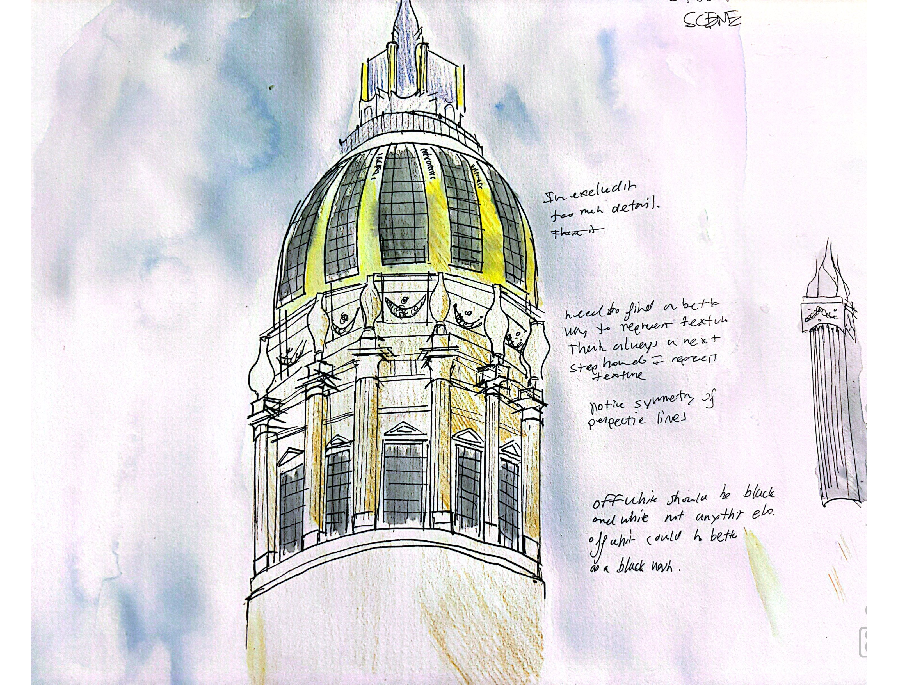

Seeing what it would look like with Panavision with a little less than 2:76:1. Experimenting with using negative space for drama/depth
Seeing what it would look like with Panavision with a little less than 2:76:1. Experimenting with using negative space for drama/depth

Quick study of circular architecture. There is a lot of symmetry in the non-circular pieces. Learning how to portray textures would be important